Picking the right color combination for a kids' bedroom feels more stressful than it should. One week it's a dreamy Pinterest-worthy palette, the next it's a sudden declaration that they "only like neon green now." Kids react strongly to color even when they can't explain why, bright tones energize them, soft ones calm them down, and the right balance keeps a room from feeling overwhelming.
The color combination matters more than the furniture, every single time. A budget room with the right palette feels intentional; an expensive one with clashing shades feels like a toy store exploded. None of the combinations below need a design degree to pull off, just a dominant color, a secondary tone, and a little restraint on the accents.

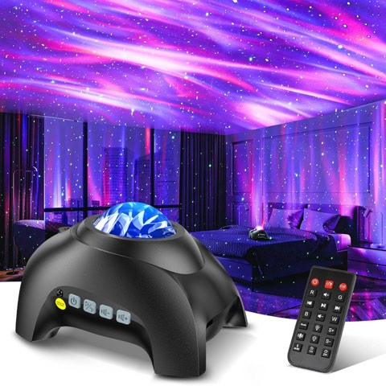
Northern Galaxy Light Aurora Projector with 33 Light Effects, Remote Control
Shop on AmazonHow to Actually Choose a Combination
Start with the child's personality rather than this week's favorite cartoon. A quiet reader tends to do well with something like sage green and cream, while a high-energy kid often gravitates toward navy with mustard accents. The classic 60-30-10 split keeps any combination from feeling chaotic: 60% dominant color on the walls, 30% secondary color on bedding or furniture, 10% accent color in the smaller details.
Natural light changes everything too. A darker room needs lighter tones to open it up, while a bright, sunny room can handle something deeper like forest green or navy without feeling heavy. And if longevity matters, keep anything trendy, lavender and peach, neon combinations, confined to pillows, rugs, and wall art, and let the walls themselves stay timeless.
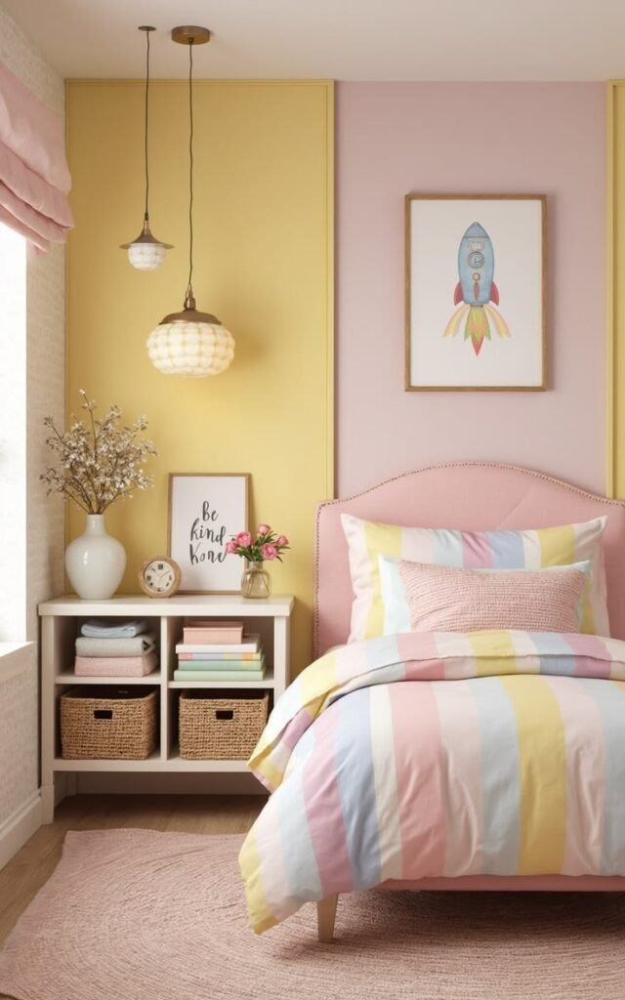

15 Kids Bedroom Color Combinations
1. Charcoal Gray and Soft Orange
This pairing feels modern, energetic, and just slightly unexpected. Charcoal gray brings sophistication while soft orange adds warmth and personality on top of it.
The contrast works especially well for older kids and tween bedrooms, reading as cool without trying too hard to get there.
Keeping orange to bedding, accent chairs, or artwork, while leaving the larger surfaces gray, white, or beige, maintains the balance before it tips into overwhelming.
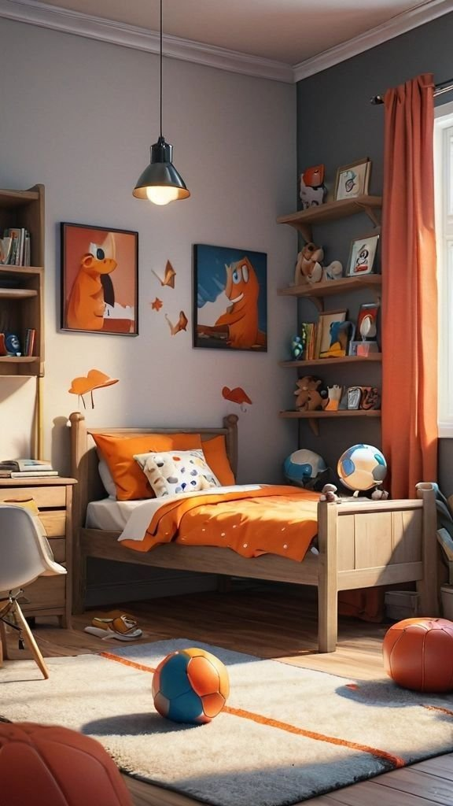
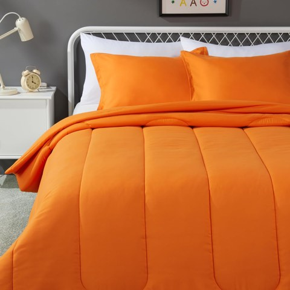
Amazon Basics 3-Piece Soft All-Season Microfiber Kid's Comforter and Pillow Sham Set, Orange
Shop on Amazon2. Aqua Blue and Sand Beige
Aqua blue instantly brightens a room, while sand beige keeps everything warm and relaxed around it, creating a beachy, carefree feeling kids tend to gravitate toward.
The combination works especially well in small bedrooms, coastal-inspired spaces, or shared sibling rooms that get plenty of natural sunlight.
Beige walls with aqua accents, white furniture, and a few natural textures keep it feeling fresh and open, no oversized nautical decor required to make the theme land.
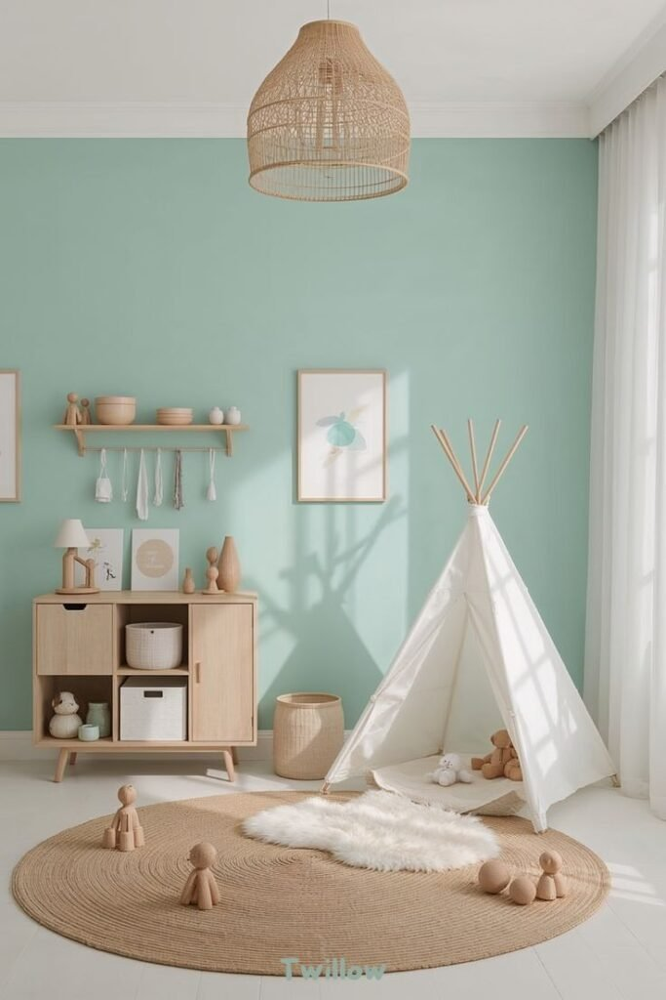
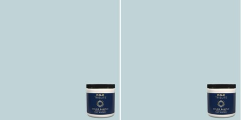
KILZ TRIBUTE Interior Paint and Primer Color Sample, Almost Aqua, 8 Oz, Pack of 2
Shop on Amazon3. Olive Green and Warm White
Olive green adds real depth while warm white keeps the room soft and balanced, landing as earthy, calming, and more versatile than it might sound at first.
It connects naturally with nature-inspired decor, and it hides everyday wear and tear noticeably better than lighter wall colors do.
Wooden toys, linen bedding, and warm lighting all work well against it, and nature-themed artwork or a few woven baskets soften the richness of the green nicely.
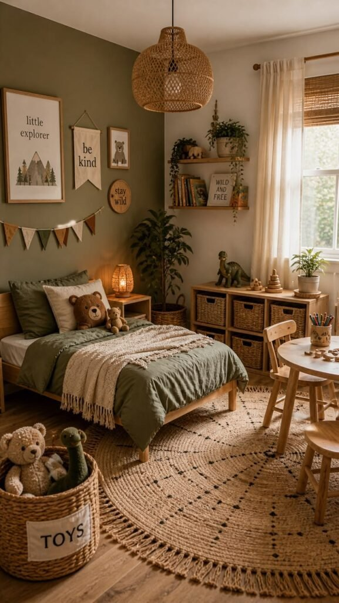

4. Lavender and White
Lavender creates a genuinely magical atmosphere without ever feeling overly dramatic, and white keeps the whole palette fresh and airy around it.
It reads as colorful without being loud, which is part of why lavender has quietly taken over the spot bright purple used to hold.
Silver accents, soft gray decor, and pale pink textiles all pair well here, the key is keeping bright purple to a minimum so the room doesn't start to feel like a candy aisle.
5. Peach and Beige
Peach and beige create one of the warmest, happiest combinations available for a kids' space, feeling sunny without ever tipping into too bright.
Peach adds gentle warmth and energy, while beige grounds everything, which makes the pairing especially effective in a room with limited natural light.
Beige walls, peach bedding, cream curtains, and wooden furniture keep it cohesive, and a little textured fabric or subtle rainbow decor adds charm without disrupting the calm.
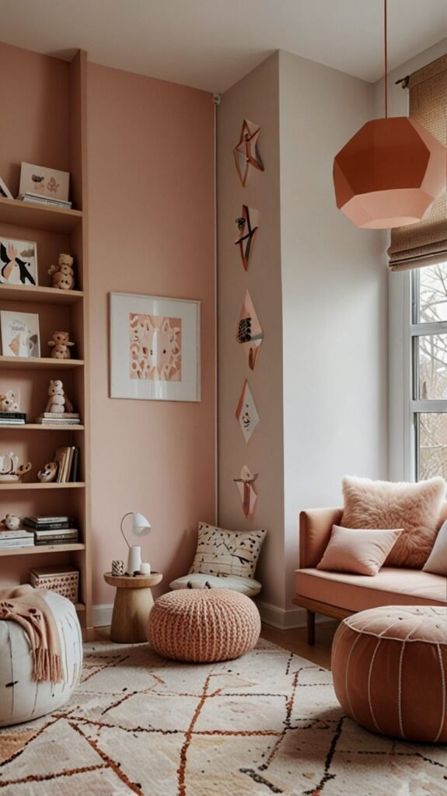

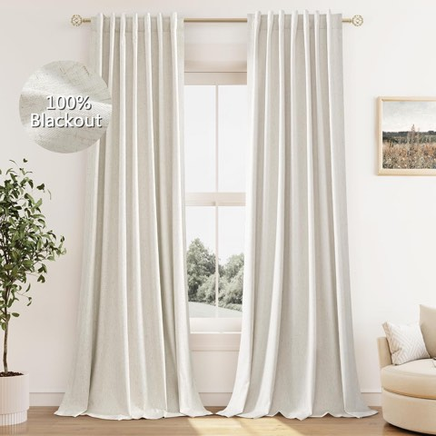
Guken Cream Linen Blackout Curtains, 84 Inch Length, 2 Panels, Back Tab
Shop on Amazon6. Teal and White
Teal brings energy and a touch of sophistication at the same time, and white keeps everything feeling clean and fresh around it.
Because teal sits between blue and green, it reads as calming yet vibrant in a way few single colors manage, a strong fit for coastal-inspired rooms or tween spaces.
Using teal carefully on an accent wall, bedding, or shelving, then balancing it with white walls and natural wood, keeps the color from darkening the room more than intended.
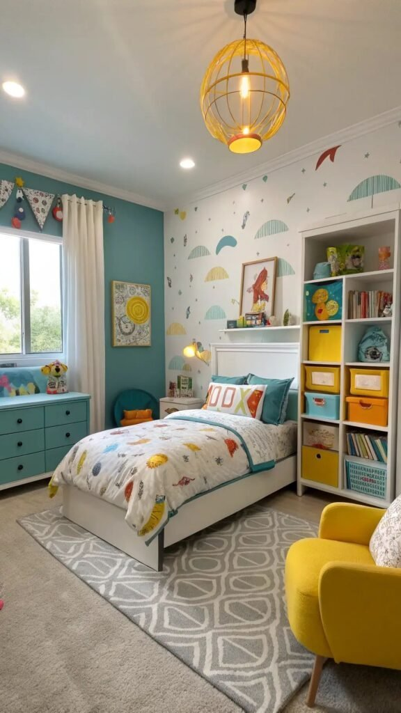
7. Blush Pink and Sage Green
This pairing feels soft, elegant, and considerably more modern than either color reads on its own. Blush pink adds warmth while sage green brings balance and freshness.
The muted tones keep the whole palette feeling calm rather than sugary, which is exactly why so many modern nursery and kids' room designs have moved toward this combination.
White furniture, gold accents, woven textures, and botanical decor round it out, and playful elements like animal-shaped cushions keep it from skewing too grown-up.
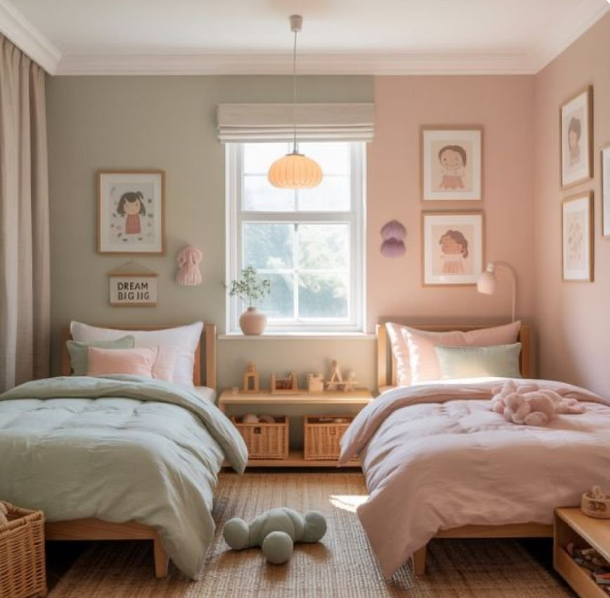

8. Sky Blue and Soft Beige
This one feels calm, airy, and genuinely timeless. Sky blue brings freshness while soft beige adds warmth, and together they land as one of the safest long-term choices on this list.
It's a strong pick for anyone who wants something stylish without needing to chase a new trend every six months.
Wooden furniture, beige rugs, and soft cream curtains round it out, and a little cloud or nature-inspired decor adds charm without disrupting the calm.
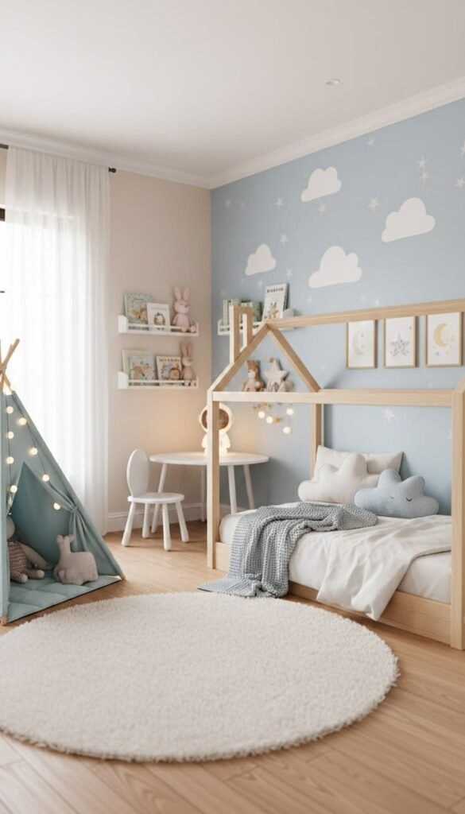
9. Gray and Yellow
Gray and yellow remain one of the most dependable combinations out there, balancing calm and energy in a way that works across a surprisingly wide age range.
Gray grows with a child extremely well, while yellow keeps the space feeling youthful without requiring a repaint every couple of years.
Yellow works best as an accent, pillows, lamps, storage baskets, while keeping the larger surfaces gray or white so the room stays genuinely relaxing rather than loud.
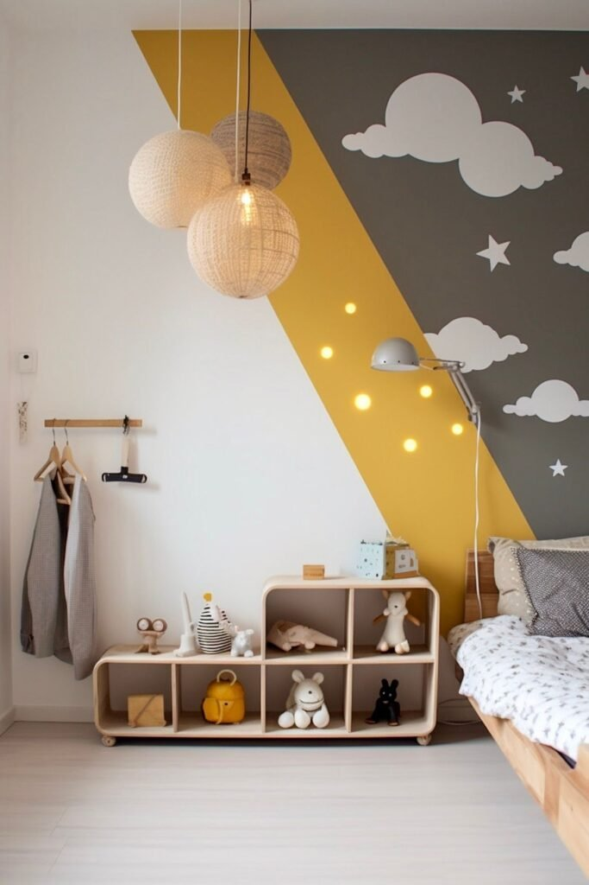

10. Mint Green and Coral
Mint green and coral create a genuinely cheerful room without overwhelming the space, energetic in a happy way rather than a chaotic one.
Mint green cools the room down while coral brings the warmth and excitement, and the balance between the two feels natural rather than fought-for.
Using mint as the dominant wall color and bringing coral in through pillows, artwork, and bedding keeps the combination from tipping past its sweet spot.
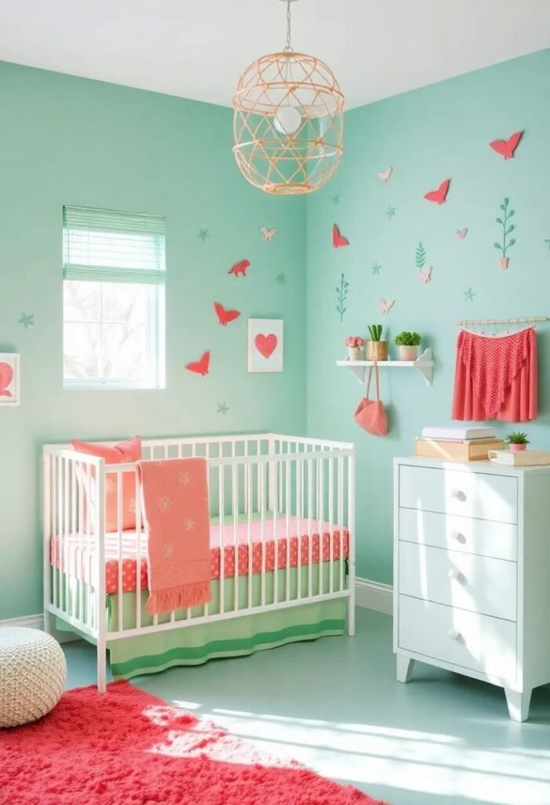
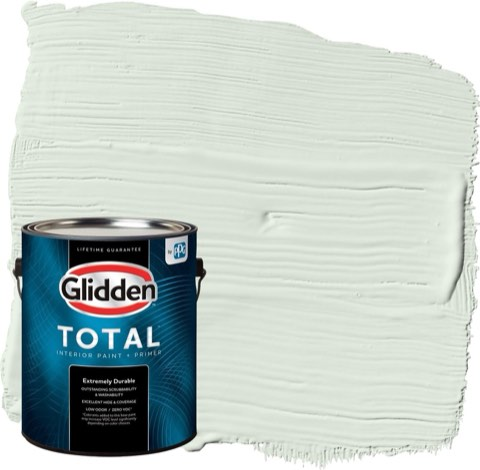
Glidden Total Interior Wall Paint and Primer, Mint Wafer Green, Eggshell
Shop on Amazon11. Dusty Pink and Light Gray
This combination feels soft and genuinely sophisticated, without drifting into the overly sweet territory that brighter pinks tend to land in.
Dusty pink reads as muted and calming on its own, while light gray balances the warmth and keeps the room from feeling overly feminine.
Velvet cushions, gold accents, and natural wood toys add the layering that makes the room feel considered, and a single dusty pink accent wall works just as well as painting the whole room.
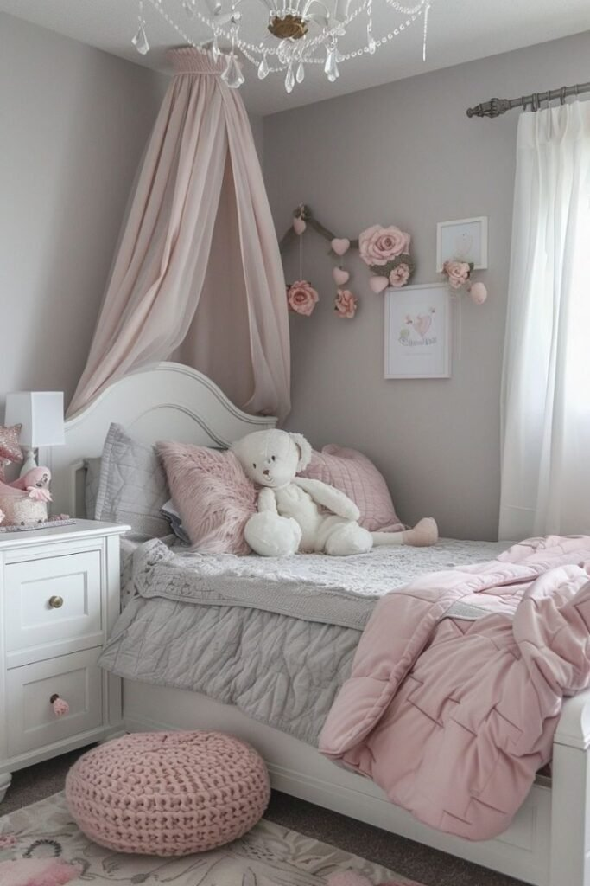

12. Terracotta and Cream
Terracotta brings real warmth and personality into a kids' room, and cream softens that richness just enough to keep the space feeling bright rather than heavy.
It suits neutral furniture, boho-inspired decor, and woven textures especially well, landing as grounded and welcoming rather than themed.
Terracotta pairs best with olive green, beige, rust, and warm wood tones, cooler colors tend to clash with its warmth, so it's worth keeping the rest of the palette warm too.
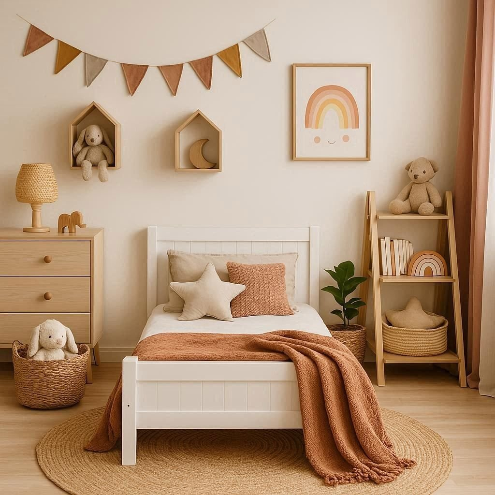

13. Sage Green and Cream
Sage green has quietly become one of the most reliable interior colors in recent years, and it earns that reputation in kids' rooms especially well.
It pairs naturally with cream furniture, light oak wood, and rattan decor, and it hides fingerprints and smudges noticeably better than a stark white wall does.
The palette also grows with a child remarkably well, animal prints, playful pillows, and storybook shelves keep it youthful now without demanding a full redesign later.
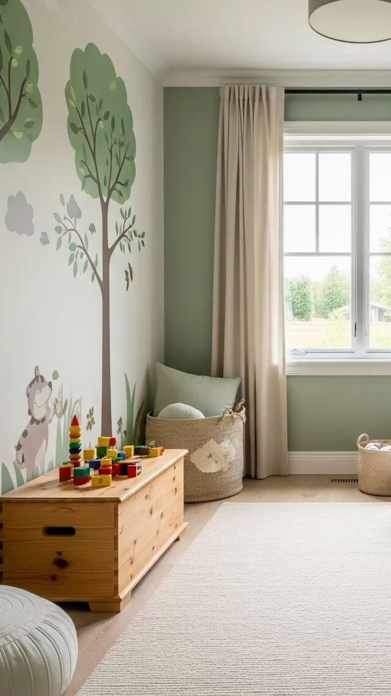

14. Navy Blue and Mustard Yellow
This pairing brings real personality. Navy creates depth while mustard yellow adds warmth and energy, and together they feel bold without tipping into chaotic.
Navy functions almost like a neutral here, anchoring the room and making every other color pop more than it would on its own.
Keeping navy limited to one accent wall, bedding, or curtains, and balancing it with white ceilings and warm lighting, keeps the room feeling cozy instead of cave-like.
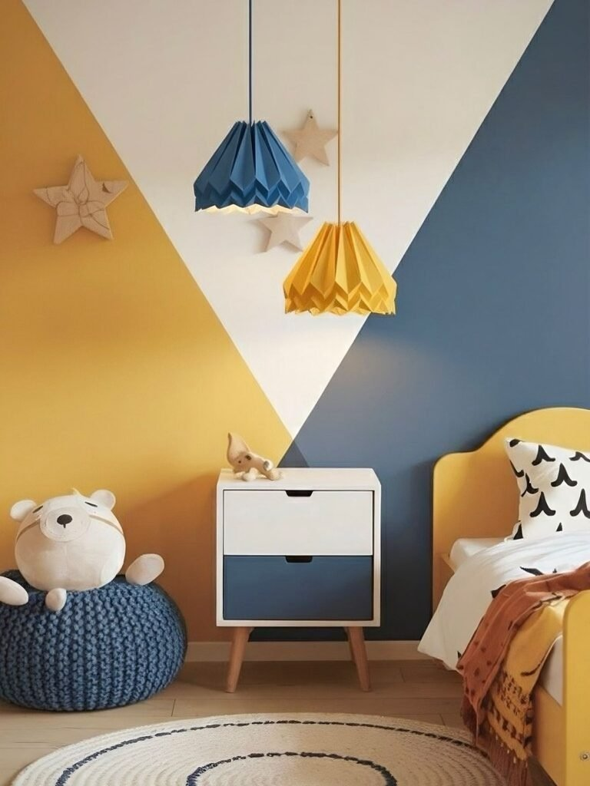

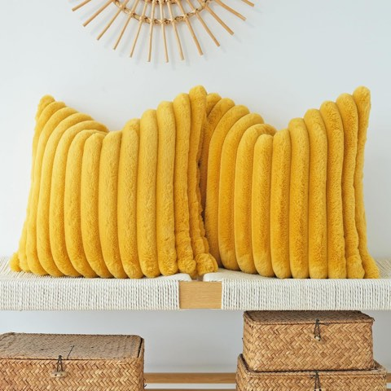
JOJUSIS Faux Fur Plush Decorative Throw Pillow Covers, Pack of 2, Mustard Yellow
Shop on Amazon15. Soft Blue and Warm White
This combination almost never fails. Soft blue creates a calm atmosphere while warm white keeps the room bright and airy, together landing somewhere peaceful without ever feeling boring.
The pairing works especially well in smaller bedrooms, where it makes the space read as noticeably larger than it actually is.
Natural wood furniture and beige or mustard accents round it out nicely, and a few textured blankets or woven baskets keep the room from drifting into cold, clinical territory.
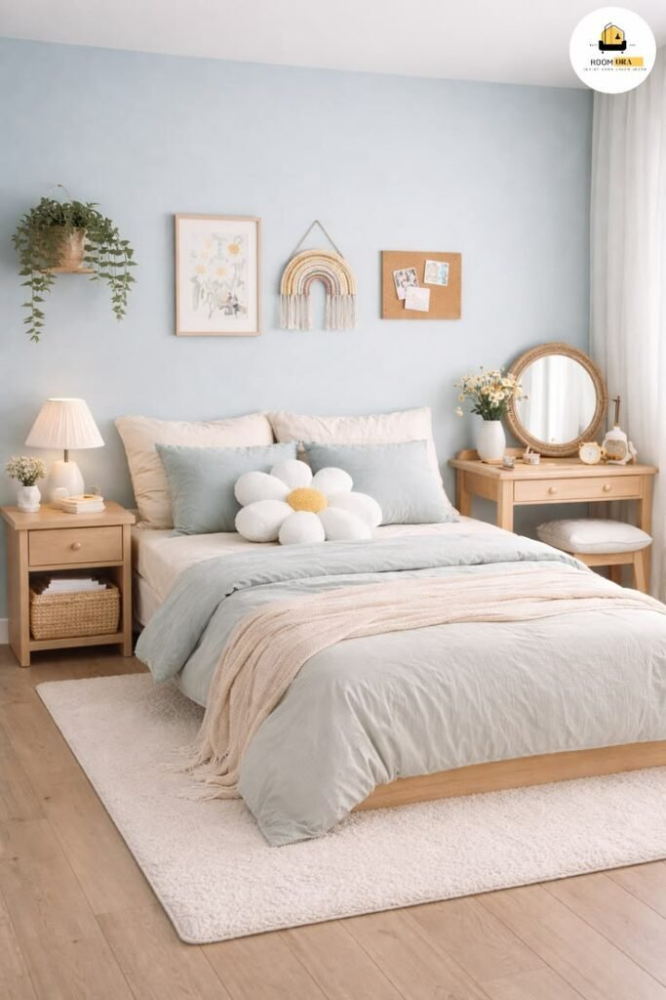
Final Thoughts
The best kids bedroom color combinations balance personality, comfort, and practicality all at once, fun enough for a child to love, calm enough to actually sleep in. Charcoal and orange bring bold personality, olive and white feel grounded, soft blue and white create calm. Every pairing sets a completely different mood.
At the end of the day, the right palette is simply whichever one makes the room feel happy, safe, and comfortable for the kid actually living in it, that matters far more than matching whatever's trending this month.